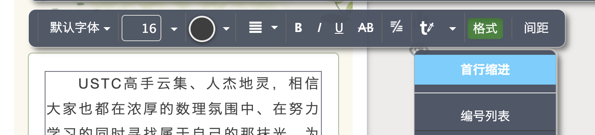

好东西与坏品味 I¶
经过之前的教程，你应该已经可以制作一篇完整的推送并发布了。要想追求更好，让推送更好看，则需要了解一些其他的知识。本文和下篇文章将围绕「让推送更好看」这一主题进行讲解。
阅读以下内容的信念是：微信推送本质上是一种网页，用户的查看效果可能随手机宽度的不同而有所不同，我们需要尽可能在大部分人的手机上显示效果做到较好，极端情况则优先级降低。
字号大小的选取¶
- 从突出内容层次的角度，如果文本具有多个层次，如 标题/小标题/正文，则可以用字号大小以示区分。越高层次的文本，字号越大。
- 从用户阅读的角度，文本的字号选取要适中，一般正文的字号为 14 至 16pt。如果文本框并非占据整个屏幕的宽度，则可以适当减小字号，以让一行放下更多的字。
字号的单位
在秀米平台，字号没有显示单位。实际上，这里的单位是 "pt"。
"pt" 是点（point）的缩写，它是一个传统的长度单位，主要用于衡量字体大小和印刷中的其他元素。1 英寸等于 72 点。
字体颜色和粗细的选取¶
- 从突出部分信息的角度，加粗和彩色可以帮助读者迅速定位到活动名称、时间、地点等潜在的关键要素。一般不建议在推送中使用中文的引号，因为在公众号文章使用的字体中引号的观感不佳。因此常常会去掉引号，改用加粗、换为彩色等方式代替。
实例
-
从突出内容层次的角度，这些样式的组合在内容层次观感上效果如下：
实例
首行缩进的选取¶
首行缩进提供了一个明显的视觉提示，表明一个新的段落或思路已经开始。这样可以帮助读者更容易地追踪和理解内容的结构。
坏品味：使用空格（space 键）伪造首行缩进。因为我们排的往往是中文文章（中文是全角字符），而 space 键输入的空格是半角字符，手机使用的字体不一定有一个全角字符的宽度等于整数个半角字符宽度之和的关系。而且使用 space 键伪造首行缩进看起来也非常不专业。
方案：
-
使用首行缩进，位置如图所示

- 使用两个全角空格（“ ”）伪造首行缩进
全/半角与全角空格
全角空格（也称为宽空格）是一种特殊的空白字符，其宽度相当于其他标准的全角字符，如中文、日文或韩文字符。在很多亚洲语言的文字处理和排版中，字符可以被分类为全角（宽字符）和半角（窄字符）。与全角空格相对的是半角空格。半角空格是我们在英文和其他大多数西方语言中常用的空格，其宽度只有全角空格的一半（某些字体显示上不一定如此）。
全角空格在亚洲语言的文档中尤其有用，因为它可以帮助保持文本的整齐和统一。当需要在全角字符之间插入空格时（例如，在中文文本中），使用全角空格而不是半角空格可以确保文本看起来更为均匀。
在许多输入法中，同时按 Shift+Space 就可以切换全/半角。切换到全角模式后，再按 space 就会输入一个全角空格。
间距的选取¶
段间距¶
若文本框本身并没有占据 100% 的宽度，而是比较窄（比如左侧有一些视觉元素），则加入首行缩进会让这个文本框变得更加不美观。也可以通过修改段落间距的方式突出段落与段落之间的区别。
下面中间的实例使用了 10 像素的段落间距，你可以在排版时综合利用各种技术让推送更美观。
行间距¶
行间距的调整则建议遵从默认设置，不要太离谱就行。
字间距¶
指的是两个字之间的宽度。字间距的设置需要综合考虑行间距、段落间距等因素，保持整个文本框是一个比较适中的状态。
关于字间距的调整可参考如下实例，其中中间的实例是看上去比较美观的。
对齐方式的选取¶
一般而言，根据需要可以自由选取对齐方式。
- 全中文：左对齐、两端对齐均可
- 全英文：左对齐、两端对齐均可，根据实际情况调整
- 中英混排：两端对齐较好
这里主要讲一下使用「两端对齐」这种对齐方式时我们需要注意的问题。「两端对齐」是一种常见的文本对齐方式，在这种对齐方式中，文本的左右两边都与页面或文本框的边缘对齐。这种方式可以给文档一个整洁、规整的外观，如下图所示。
全中文排版时这种问题比较少，因为每个中文字的宽度都相同。在中英文混排的情况下，使用左对齐产生的河流现象会比较严重（如上左图红色曲线所示）。使用两端对齐会让排版变得规整，但是两端对齐也可能带来其他问题，需要注意。
问题出现在长英文单词（或者说，长的连续的半角字符串，如邮箱地址等）的引入。如果长英文单词导致必须换行，但是其前面的内容又不足以支撑一整行，就会被迫用很长的空格隔开每一个单词，看上去非常不美观。
这个问题不太好处理，因为之前说过每个人的手机宽度不一样。也许在不影响内容主旨的情况下修改一下表达是可以的，但是还是可能会出现类似的问题，建议在这方面尽量注意就行，目前我也没想到十全十美的解决办法～（也许是返璞归真用左对齐）
其他文本方面的注意点¶
注意点1
文中提到的竖线经常出现在标题中，如「某活动|活动标题」，这样在手机上很不好看。而且半角竖线的高度和中文字也不一样，所以还是建议用全角竖线。
注意点2
在出现“——”破折号处，在秀米上就可以更改字体，使用看起来中间连贯的字体。
总结与复习¶
这篇文章主要介绍了如何让微信推送更具吸引力和可读性。以下是文章的要点大纲：
-
字号大小的选取：
- 根据内容层次选择不同字号，高层次的文本字号更大。
- 一般正文的字号为 14 至 16pt。
- 字号单位为 "pt"（点）。
-
字体颜色和粗细的选取：
- 使用加粗和彩色来突出重要信息，如活动名称、时间、地点等。
- 避免使用引号，使用加粗或彩色代替。
-
首行缩进的选取：
- 使用首行缩进来突出段落和思路的开始。
- 避免使用空格伪造首行缩进，使用全角空格。
-
间距的选取：
- 段间距可以用来突出段落之间的区别，特别是在窄文本框中。
- 行间距应保持默认设置，不要过大。
- 字间距需要综合考虑行间距和段落间距等因素。
-
对齐方式的选取：
- 选择对齐方式时，根据文本内容和排版需要自由选取。
- 使用两端对齐时需要注意长英文单词可能导致排版不美观的问题。
- 长英文单词可以使用左对齐来解决，也可以在不影响内容主旨的情况下调换语序。
-
其他文本方面的注意点：
- 使用全角竖线代替半角竖线，以避免标题显示不美观。
- 在需要连贯字体的地方使用秀米上的字体设置。
作业¶
请你对照本文，修正之前作业推送中的潜在问题。
（撰写：黄瑞轩）